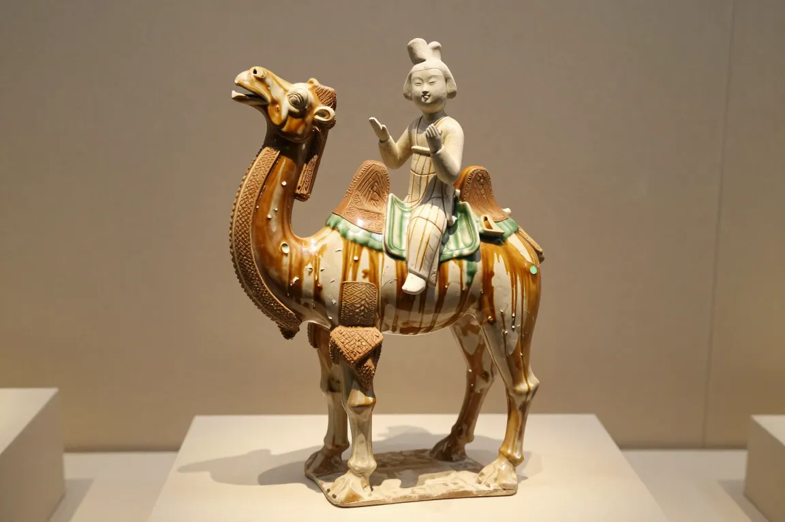

Gravfigurer av hvitt leirgods under blyglasurer i rav, grønt og krem som flyter inn i hverandre. Hoffdamer, sogdiske stallgutter, kameler, hester og voktere viser livet langs silkeveien.

Kjerneidé
En gravfigur viser luksusen ved det levende hoffet i leire, og en trefarget blyglasur får dyret eller damen til å gløde.
Designprinsipper
Lag figuren av et hvitt eller lysebrunt leirgods som presses i former, i deler.
Brenn legemet én gang til omtrent 1050 °C før noen glasur berører det.
Sprut rav, grønn og krem blyglasur på biskvien, og la dem flyte og blande seg i den andre brenningen ved 800 til 900 °C.
La ansiktet, hendene og noen ganger håret stå uten glasur, og mal dem kalde etter brenningen.
Gi en hest sterk hals, lite hode og knyttet hale, og en kamel et hevet hode med åpen munn.
Modellér sogdiske stallgutter og musikere med skjegg, høye luer og store øyne, som handelsmennene på silkeveien.
Gi en vokter et hardt ansikt, en hevet neve og en fjellsokkel, og en høyde på 70 til 100 cm.
Hold glasuren unna bunnen, som står bar og tørr, slik at den ikke fester seg til ovnen.
Antimønstre
Én flat glasurfarge over hele figuren
Et gjennomskinnelig hvitt porselensgods med tynne vegger